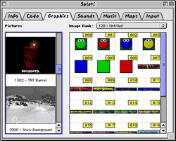
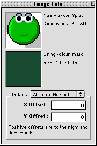

|
||||
Chapter 3.3 |
||||
The Graphics
|
||||
Graphics Section
|  |
|
Hieroglyph Graphics Section
(Click to enlarge) |
The right most table shows the image banks available in your project. An image bank is a list of pictures that are loaded together and made available to your program for tasks such as sprite animation. Images are mostly used for sprite animation, for example, an image bank could contain all the images of your game's main character running.
Your project can have multiple image banks. These are accessed through the image bank popup at the top of the window. You can create new entries in your image bank by dragging pictures from the left most table. You can also use dragging to rearrange entries in the image bank.
Entries in an image bank are not just references to your project's pictures, because each image bank entry also has associated with it a transparency mask, collision detection settings and hotspot settings. These settings are edited in the "Image Info" palette.
The "Image Info" palette edits the currently selected image bank entry. You can select multiple image bank entries to apply your changes to all of them simultaneously.
The Image Info Palette
|  |
|
Hieroglyph Image Info Palette
|
The top thumbnail shows a preview of your image with the mask applied to it. The lower thumbnail shows the mask that is being used on the image. The mask controls which parts of the picture are transparent. It can be set to a simple colour or to a grey scale transparency mask.
Changing the Image Mask
To set the image mask to a simple colour, double click in the mask preview box (the lower box), this will open a colour picker dialog from which you can select the transparency colour. If you hold down the option key you can pick a colour from anywhere on the screen.
Once selected, any parts of the picture that are equal to the mask colour will be transparent.
You can also use mulitple levels of transparency, to make some pixels fully transparent, some semi-transparent and some opaque. This can useful for softening the edges of your images by making the edges 50% translucent for instance. This technique is also known as anti-aliasing and can make your graphics appear much smoother on screen.
To use multiple levels of transparency you need a grey scale mask. First make a greyscale mask in your preferred paint program. It should be exactly the same size as your image picture but use only greys. Colour the image black where you wish it to be transparent and white where you wish it to be opaque (solid). Use any level of grey inbetween to represent semi-transparent. Once you greyscale mask is ready, copy it to the clipboard. In Hieroglyph, select the image bank entry that you want to apply the mask to and click once on in the mask thumbnail box. It will become highlighted. Now select paste from Hieroglyph's edit menu to paste the greyscale mask into the mask box. Your image will now have a greyscale mask and multiple levels of transparency.
Changing the Hotspot Settings
When images are used in TNT Basic, be it by sprites, buttons or commands such as "paste image", they are always placed at a point on the screen.
Imagine the screen as a cork board which images are stuck to with pins. The images can be any size but are always pinned with a single pin that occupies exactly one pixel. The hotspot defines exactly where in the image the pin goes through when pinning the image to the cork board.
If we draw a 50x50 pixel image at the point (100,100) it might occupy the rectangle from (100,100) to (150,150) for example, or it might occupy the rectangle from (75,75) to (125,125); it depends where the pin, the hotspot, is placed.
The image hotspot is used to define how the image is drawn relative to the point that it is positioned at. The image's hotspot is a point inside the image that is always aligned with the point it is drawn to on the screen.
You can set the hotspot to any once of nine presets by using the relative hotspot setting in the "Image Info" palette. You can set it to:
- Top Left
- Top
- Top Right
- Left
- Middle
- Right
- Bottom Left
- Bottom
- Bottom Right
Alternately, you can specify an absolute hotspot by using the "Absolute Hotspot" setting from the menu. Here you can type in an (x,y) co-ordinate for the hotspot of your image, allowing you to set it exactly as you want. This option is useful for aligning frames of animation.
The hotspot is allowed to lie outside of the image, for example if could be set to negative values or to values greater than the height/width of the image.
Setting a Collision Mask
Collision masks are used in association with TNT Basic's "sprite col" command to detect collisions between sprites. A collision is when two sprites overlap on screen. This can be used to detect if missiles have hit a ship, or if a baddie has touched the main character, for example.
The collision settings for individual images can be controlled in the collision settings part of the image info palette. The image's collision mask can be set to two values: fast and exact.
Fast Collision Masks
If the "fast" option is used, the mask is set to the bounding rectangle of the image. This means if two image's bounding rectangles overlap are determined to be touching. It is called fast because it is very quick for TNT Basic to test for collisions with rectangular collision masks.
A problem with using a rectangle as a collision mask occurs when your image has lots of indentations. Consider the following image: